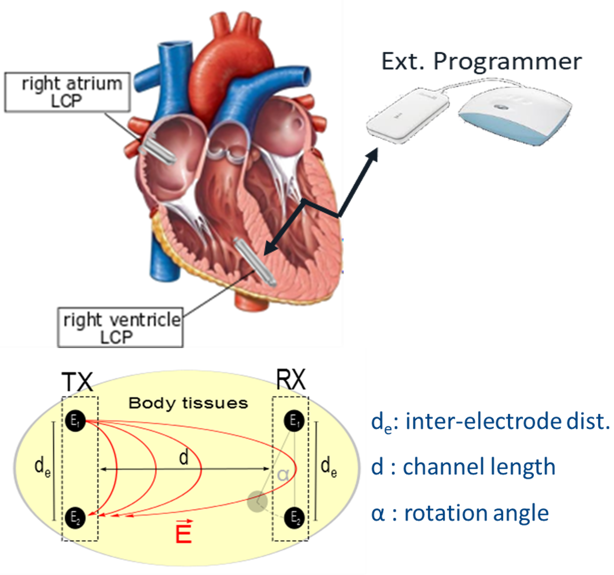

Heart contraction is driven by an electrical impulse that originates in sinoatrial node (SA node) called pacemaker cells. The impulse propagates in a coordinated way using the conduction system to arrive heart fibers. The conduction system includes SA node, atrioventricular node (AV node), Bundle of HIS, Purkinje fibers and so on.
Cardiac cell electrical activity is measured through transmembrane potential. The voltage drop across the membrane is generated by the difference in ionic concentration. The main ionic concentrations regulating the membrane potential are the Sodium (Na+) and Potassium (K+) ions. Action potential cycle shows the process of depolarization and repolarization.
SA node dominates cardiac rhythm since the pacemaker cells have the highest automaticity. There are four main kinds of cardiac disorders: premature contractions, bradycardia, supraventricular tachycardia, and ventricular tachycardia. Bradycardia is a slow or irregular rhythm that no sufficient oxygenated blood can be pumped to the whole body. The reason for bradycardia is usually related to SA node or AV node disorders.
Fig 1.1 specialized conduction system ventricular action potential
Pacemakers provide solutions for bradycardia. A pacemaker must sense spontaneous heartbeats and pace whenever the heartbeat rate is too slow.
A conventional pacemaker consists of a subcutaneous control unit and leads inside chambers in order to sense or deliver depolarization. The lead is the weakest link in the current system since it can cause infection and mechanical damage. Patients undergoing lead retrieval have the highest mortality rate due to the complex procedure. Leadless Cardiac Pacemaker (LCP) integrates all functions into a capsule, possessing a self-contained device consists sensors, a current injector, a telemetry module, and an integrated battery unit, which is designed to be implanted inside the right ventricle through a transvenous catheter without using a lead.
Fig1.2 conventional cardiac pacemaker vs LCP
Wireless cmmunication between implant and external programmer requires optimization of sizing, power consumption, low risk of eavesdropping. Compared with radiofrequency and inductive coupling, intra-Body Communication (IBC) is optimized from these three aspects, which is a near field communication method based on Ohmic transmission through body tissues.
A dipole is used to build up an electric field that propagates through the human body, reaching a second dipole used to receive the signal. There are three main geometrical factors that affect signal attenuation of IBC channel: channel length, inter-electrode distance, and mutual orientation. The major question of IBC channel characterization is the link budget and frequency dependence to determine center frequency and gain of amplification. IBC channel characterization is based on equivalent circuit modeling by considering human body as a 2-port network with tissue bio-impedance and computational electromagnetic modeling using COMSOL based on numerical analysis. Trans-thoracic channel has been characterized in this project for external programming.

Fig1.3 IBC transthoracic channel for external programming
The emitting dipole behaves as Gauss' law. Maxwell's equations can fully describe electromagnetic phenomena of IBC signals. Quasi-static assumptions can decouple Electric
field E and Magnetic field H since the velocity of magnetic field flux B does not contribute to Electric field magnitude and vice versa within certain frequency range.
Body tissues are complex materials whose permittivity is the superposition of several relaxation processes due to different polarization effects. Conductivity σ and relative permittivity ε of the biological tissues are frequency dependent and have been set using parametric functions.
Overall, anisotropy and geometry play a key role in channel pathloss evaluation. To fairly represent electric field distribution, an accurate torso model from IT'IS Zurich is imported into COMSOL.
Trans-thoracic channel enables data transmission from implant to external programmer. External programmers may use patch electrodes placed on the skin surface of the body to couple the implanted devices.
The minimum and maximum signal attenuation of this channel should be investigated, corresponding to the mutual orientation between two dipoles.
For frequency range selection, the lower bound is to ensure a margin with respect to electrophysiological signals, and the upper bound is at the limit of quasi-static assumptions.
The surface electrode has an inter-electrode distance that is more than twice the capsule length and can be optimally placed on the body surface to maximize the differential voltage across the receiver dipole.
The attenuation is at 25dB for the best case and 80dB for the worst case when carrier frequency is in hundreds of kHz.
The attenuation variability according to positioning can be used to set the link margin of the channel considering the worst-case scenario and design a receiver that allow demodulating data either way.
IBC channels show lower signal attenuation at high frequencies. However, micro-electronic circuitry requires more power as soon as the working frequency increases. The optimal carrier frequency is set to be hundreds of kHz.
To optimize transceiver power consumption, the modulation complexity must be maintained as low as possible to relax transceiver performance requirements. On-Off Keying (OOK) and Frequency-Shift Keying (FSK) are viable modulation schemes for ultra-low-power receiver design.
FSK modulation, in general, is more robust but requires more power at the receiver side compared to OOK modulated signals due to the necessity for an internal frequency reference to demodulate incoming signals. Actually, the LCP synchronization does not require high data rate communications, so FSK modulation is chosen.
The prototype is validated in both in vitro experiment and in vivo experiement for animal trial.